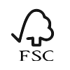

I dont love coding
CloseVores Matrialer

Bambus

Økologisk Bomuld

Hør
Grey Wolf producerer bæredygtigt tøj med fokus på
naturlige materialer som bambus, økologisk bomuld
og hør. Ved at vælge disse materialer reducerer
virksomheden deres CO2 -aftryk, da det kræver mindre
vand og energi at fremstille.
Certificeringer
Grey Wolf er certificeret med GOTS, FSC og OEKO-TEX,
hvilket sikrer høj standard for bæredygtighed i
produktionen. GOTS garanterer økologisk
tekstilproduktion, FSC-certifikatet bekræfter
ansvarlig skovdrift, og OEKO-TEX sikrer, at deres tøj
er fri for skadelige kemikalier.
